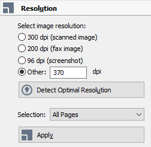

Preprocess all images in a new OCR Project before drawing boxes.
The first task with any new OCR-Project is to optimize the page
images before beginning the OCR process.
DANGER: This must be done before you begin drawing boxes. It will remove
them if they already exist.
-
Open a new OCR-Project in ABBYY FineReader. For any
page, select the Edit Image icon on the Image Pane
toolbar.
The Image Editor window opens.
-
In the right-hand panel, open the Resolution
dialogue.
Figure 1: The Resolution dialogue

-
Set the Selection: dropdown menu to All
Pages. Cick Detect Optimal Resolution.
Click Apply.
-
Open the Recommend Preprocessing dialogue at the top of
the panel. Set Selection: to All
Pages. Click Preprocess.
Figure 2: The Recommended Preprocessing dialogue.
-
Wait for preprocessing to complete, and then close the image editor with the
Exit Image Editor option at the top of the image
page.
-
Save the OCR-Project to preserve your changes.